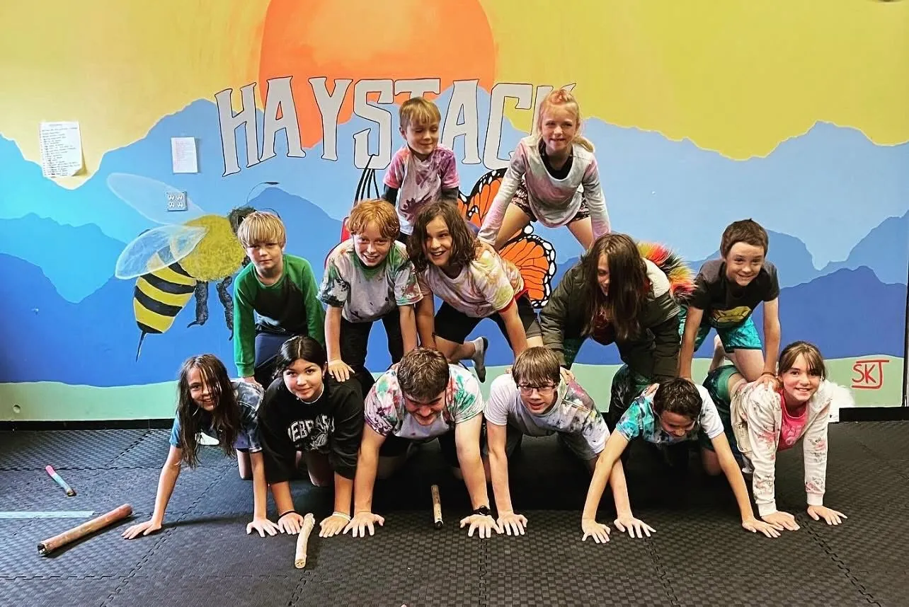
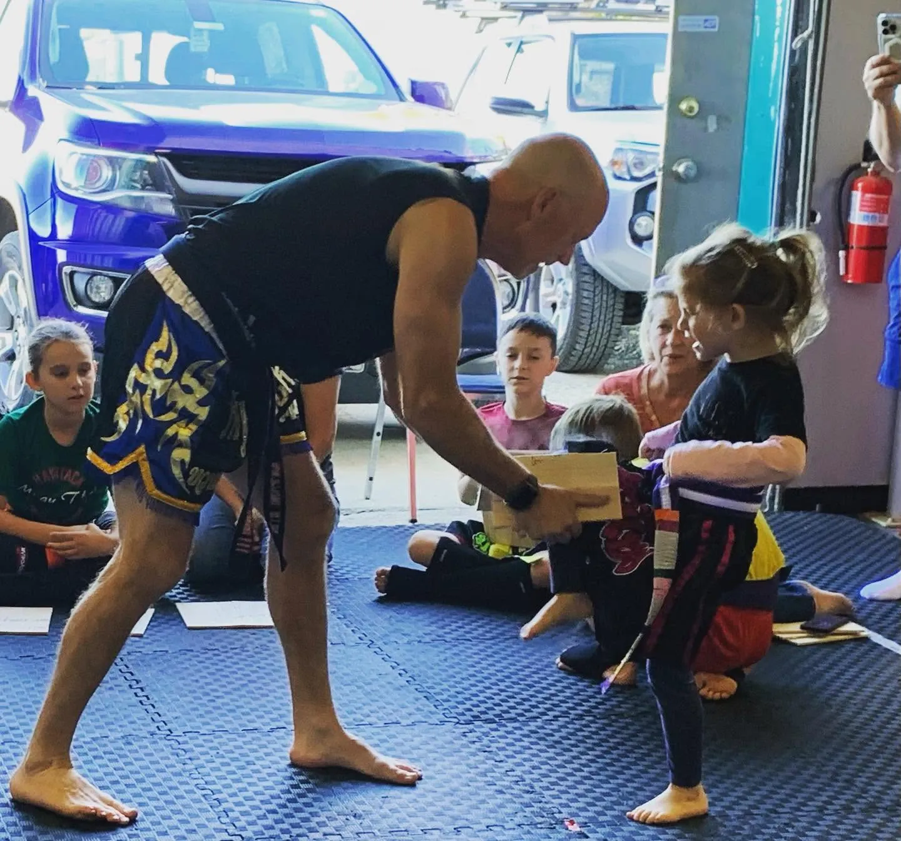
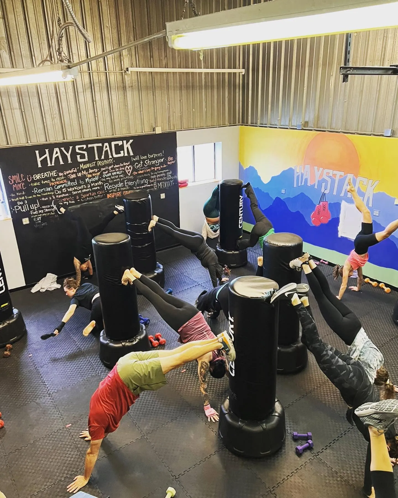

Ages 4–13
Kids & juniors
Develop focus, coordination, confidence, and self-discipline in a supportive setting.
Explore youth classes →Confidence begins with showing up. Discover authentic Muay Thai, great coaching, and a supportive place where kids, teens, and adults can thrive.

Whether you're trying your first class or returning to the sport you love, Haystack programs support growth at your pace.

Develop focus, coordination, confidence, and self-discipline in a supportive setting.
Explore youth classes →
Build real skills and improve fitness, from beginner foundations to advanced levels.
Explore adult classes →
Build stamina and strength through varied, high-energy workouts.
Explore fitness classes →
Haystack was created by founder and head instructor Kru Scott Meier to bring together martial arts, physical fitness, and personal growth. The goal is to bring out the best in every student.
Get to know Haystack ↗A first class, a new friend, a milestone earned. Haystack is as much about the people as the practice.
Photos supplied from Haystack's Facebook page for this unofficial design preview. Image reuse, especially photos of children, should be approved by Scott before production.
For newcomers planning a first visit and members looking ahead.
See class calendar →